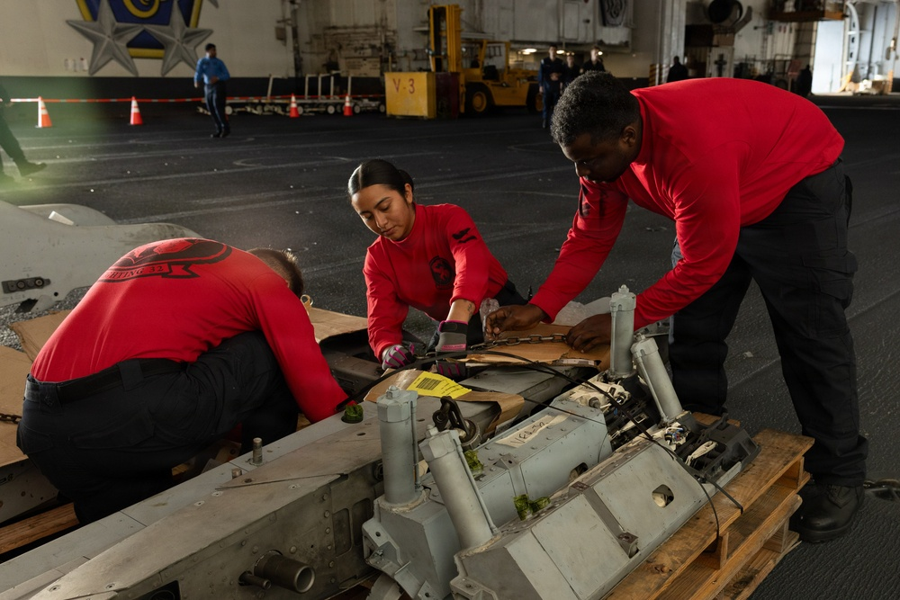

MC Seaman Melissa Arms Kelly, U.S. Navy · DVIDS 9979984 · Public domain · Ordnance sailors of Strike Fighter Squadron 32 secure gear for sea aboard USS Dwight D. Eisenhower (CVN 69) in the Atlantic, Sept. 29, 2026.
USNI News
Carrier Eisenhower heads back to Norfolk after losing a Growler in a landing mishap
USS Dwight D. Eisenhower is returning to Naval Station Norfolk after a Sept. 28 landing mishap that cost the Navy an EA-18G Growler and injured four sailors, USNI News reported Saturday. The Navy said the jet, from the Whidbey Island-based “Zappers” of Electronic Attack Squadron 130, had an arresting-gear failure while landing off the Virginia coast. Both aviators ejected and were picked up by search-and-rescue crews from Helicopter Sea Combat Squadron 7. The Navy said the return to port will allow a comprehensive assessment after the mishap. It has not said how long Ike will stay pierside or how the carrier’s training schedule will shift.
USNI News · Read source →